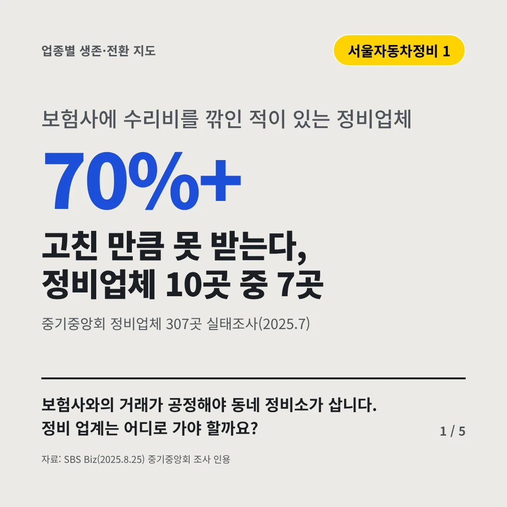
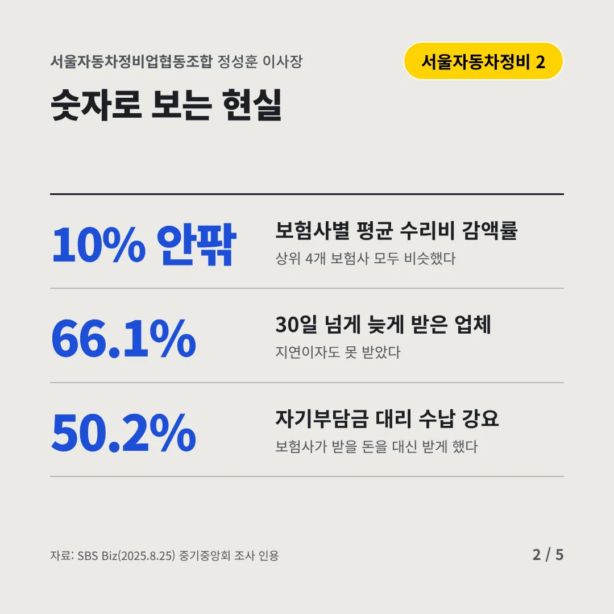
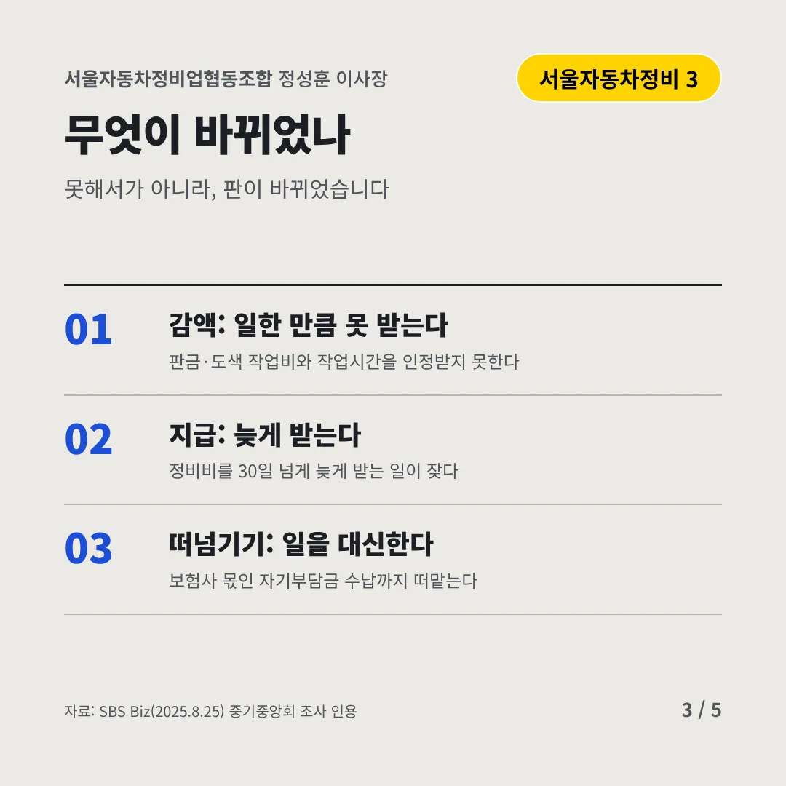
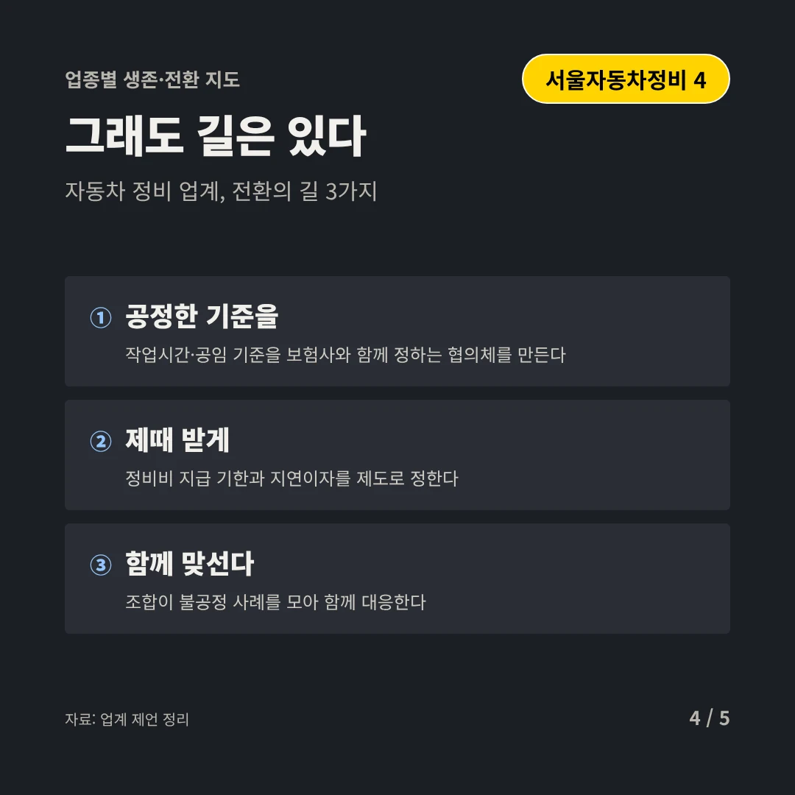
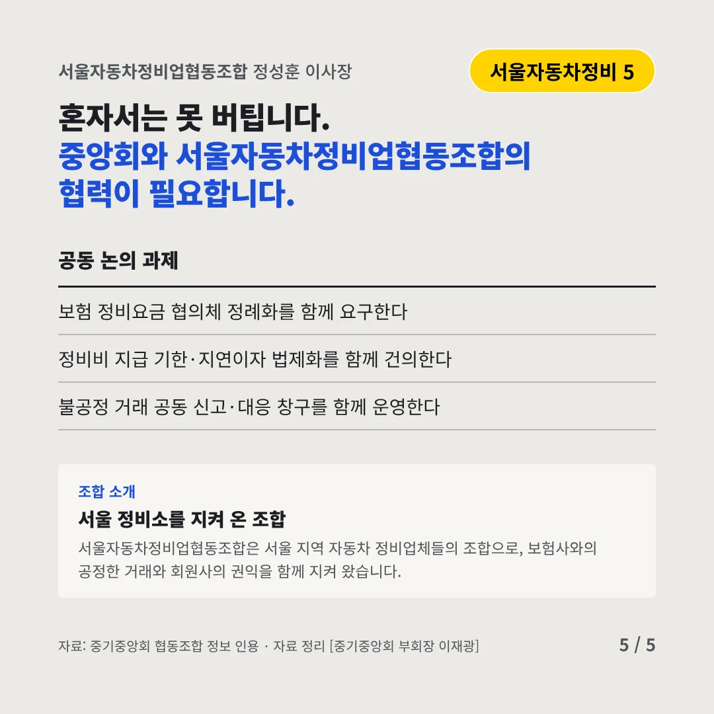
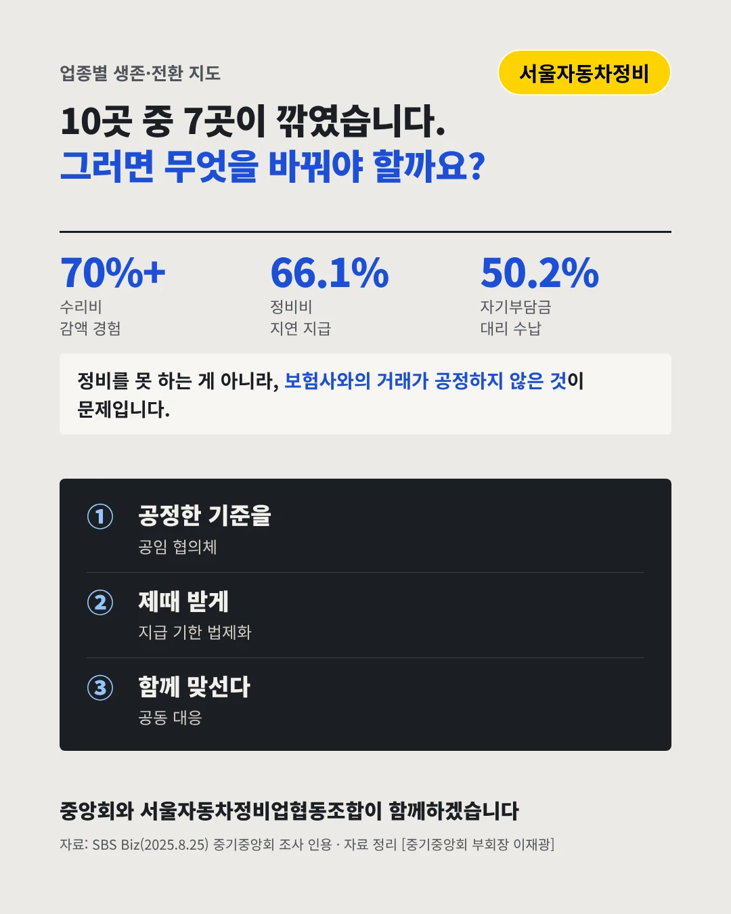

서울자동차정비업협동조합
고친 만큼 못 받는다, 정비업체 10곳 중 7곳
70%+ 보험사에 수리비를 깎인 적이 있는 정비업체






보험사와의 거래가 공정해야 동네 정비소가 삽니다. 정비 업계는 어디로 가야 할까요?
숫자로 보는 현실
- 10% 안팎보험사별 평균 수리비 감액률상위 4개 보험사 모두 비슷했다
- 66.1%30일 넘게 늦게 받은 업체지연이자도 못 받았다
- 50.2%자기부담금 대리 수납 강요보험사가 받을 돈을 대신 받게 했다
무엇이 바뀌었나
- 감액: 일한 만큼 못 받는다판금·도색 작업비와 작업시간을 인정받지 못한다
- 지급: 늦게 받는다정비비를 30일 넘게 늦게 받는 일이 잦다
- 떠넘기기: 일을 대신한다보험사 몫인 자기부담금 수납까지 떠맡는다
그래도 길은 있다
- 공정한 기준을작업시간·공임 기준을 보험사와 함께 정하는 협의체를 만든다
- 제때 받게정비비 지급 기한과 지연이자를 제도로 정한다
- 함께 맞선다조합이 불공정 사례를 모아 함께 대응한다
한 장 요약

조합 소개
서울자동차정비업협동조합은 서울 지역 자동차 정비업체들의 조합으로, 보험사와의 공정한 거래와 회원사의 권익을 함께 지켜 왔습니다.
자료: SBS Biz(2025.8.25)